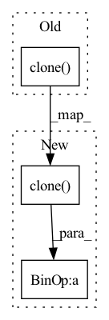

Pattern ID :2226
Before Change
h[..., n] = (
torch.einsum(
"...d,...d->...",
h[..., max(0, s) : n].clone() ,
c1[..., max(0, -s) :],
)
/ nAfter Change
h[..., 0] = torch.exp(c0)
for n in range(1, self.impulse_response_length):
s = n - self.cep_order
h[..., n] = (h[..., max(0, s) : n].clone() * c1[..., max(0, -s) :]).sum(
-1
) / n
return hIn pattern: SUPERPATTERN
Frequency: 3
Non-data size: 3
Instances Fragment ID: 7791010
Project Name: sp-nitech/diffsptk
Commit Name: 29f817e959598e410ea695820338b357fa21fff2
Time: 2022-04-08
Author: takenori.yoshimura24@gmail.com
File Name: diffsptk/core/c2mpir.py
M Class Name: CepstrumToImpulseResponse
N Class Name: CepstrumToImpulseResponse
M Method Name: forward(2)
N Method Name: forward(2)
M Parent Class: nn.Module
N Parent Class: nn.Module
M File Name: diffsptk/core/c2mpir.py
N File Name: diffsptk/core/c2mpir.py
M Start Line: 69
M End Line: 83
N Start Line: 69
N End Line: 79
Before Change
// predict density (sigma)
density_out = self.density_mlp(table_features)
density_out[..., 0] = self.density_actvn(density_out[..., 0])
density = density_out[..., 0].clone()
// predict radiance (RGB)
color = self.color_mlp(torch.cat([density_out, view_dir], dim=-1))
color = self.color_actvn(color)After Change
// predict density (sigma)
density_out = self.density_mlp(table_features)
density = 2 ** density_out[..., 0].clone()
// predict radiance (RGB)
color = self.color_mlp(torch.cat([density_out, view_dir], dim=-1))
color = self.color_actvn(color) Fragment ID: 7791011
Project Name: dvelopery0115/torch-nerf
Commit Name: 33d2bb942ab1d8e673f02f8b0611e0588019ccde
Time: 2022-07-24
Author: dreamy1534@kaist.ac.kr
File Name: torch_nerf/src/network/instant_ngp.py
M Class Name: InstantNeRF
N Class Name: InstantNeRF
M Method Name: forward(3)
N Method Name: forward(3)
M Parent Class: nn.Module
N Parent Class: nn.Module
M File Name: torch_nerf/src/network/instant_ngp.py
N File Name: torch_nerf/src/network/instant_ngp.py
M Start Line: 147
M End Line: 149
N Start Line: 148
N End Line: 148
Before Change
output_nodes = nodes[id: id + num_nodes]
beta = torch.zeros(self.items_total, 1).to(nodes.device)
beta[output_nodes] = 1
embed = (1 - beta * self.alpha) * items_embedding.clone()
embed[output_nodes, :] = embed[output_nodes, :] + self.alpha[output_nodes] * output_node_features
batch_embedding.append(embed)
id += num_nodes
batch_embedding = torch.stack(batch_embedding)After Change
items_embedding = self.item_embedding(torch.tensor([i for i in range(self.items_total)]).to(nodes.device))
alpha = torch.sigmoid(self.alpha)
embed = (1 - alpha) * items_embedding.clone() + alpha * nodes_output
return embed
Fragment ID: 7791009
Project Name: benedekrozemberczki/pytorch_geometric_temporal
Commit Name: c402d2a14167bceaa3c8d3845879f8056e8aead7
Time: 2021-07-18
Author: benedek.rozemberczki@gmail.com
File Name: torch_geometric_temporal/nn/attention/dnntsp.py
M Class Name: GlobalGatedUpdater
N Class Name: GlobalGatedUpdater
M Method Name: forward(3)
N Method Name: forward(4)
M Parent Class: nn.Module
N Parent Class: nn.Module
M File Name: torch_geometric_temporal/nn/attention/dnntsp.py
N File Name: torch_geometric_temporal/nn/attention/dnntsp.py
M Start Line: 78
M End Line: 98
N Start Line: 85
N End Line: 87